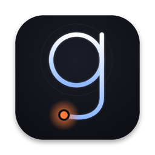
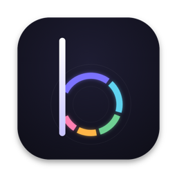
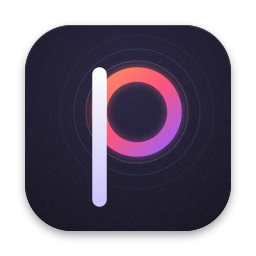

In the Dock
Concepts
Small sizes are the real 128/64/32/16 px renders, shown at 1:1 CSS pixels (on a Retina screen the browser upsamples them, which is roughly what a non‑Retina Finder list shows).
The by Kash family

Geminio · Monoline
Budget · Allocate (study)
Pdfs · MonolineThe shared signature across the other apps is one illustrated lowercase initial on a dark, softly lit body. Monoline, Didone, Strata, Squish and Origami keep that signature with a p; Sheet, Accordion and Diamond step away from it to test whether a picture works better than a letter for a utility.
Notes
- Strongest overall: Strata. The bands thin toward the bottom, so the compression idea is there without a single literal arrow, and the heavy white p survives 16 px better than anything else here.
- Best family fit: Monoline. It is a sibling of Geminio's default; the faint outer rings are the larger file it used to be. Thin at 16 px, like its siblings, so it would want a heavier small-size variant.
- Most native: Sheet. Reads instantly as a document utility next to Preview and Finder, but it is the most expected.
- Weakest at small sizes: Accordion and Squish lose their story under 32 px (they still hold a recognisable silhouette).